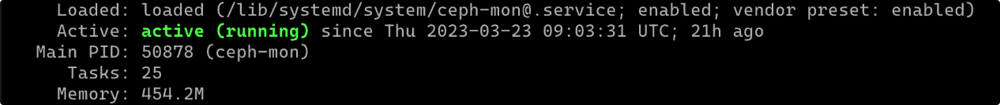
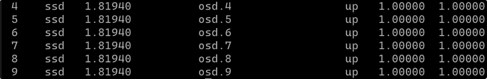

Ubuntu 20.04 下 Ceph quincy 源码安装
前言
使用官方源码编译过程中主要参考链接 1~3 官网链接以及链接 8，有比较详细的步骤
想要实现效果：
- 两台主机承担 Ceph 所有服务功能，一主一备分别运行 Mon，Mgr 以及 Mds 等服务，每台机器上都有相应的存储作为 OSD 加载；
- 这两台主机均使用源码编译，启动 DPDK 和 SPDK 服务，加速其他客户端的读取访问操作；
- 其他机器通过局域网交换机与这两台记录建立通信，作为客户端连接到集群。在这些机器上挂载 CephFS 目录，实现共享文件系统访问；
当前环境 - 所有机器均通过 Cisco 交换机进行连接，连接网卡为 Intel XL710 40G；
- 机器环境均为 Ubuntu 20.04 LTS
整个集群规划如下 - storage0 (10.0.1.2) - 主 Mon, Mgr, Mds, OSD (源码编译添加 DPDK SPDK 选项)
- storage1 (10.0.1.3) - 从 Mon, Mgr, Mds, OSD (源码编译添加 DPDK SPDK 选项)
- gpu0 (10.0.1.4) - Client (局域网络挂载 CephFS 服务)
- gpu1 (10.0.1.5) - Client (同上)
- gpu2 (10.0.1.6) - Client (同上)
1. 源码安装
从官网 clone 后在源码进行编译（测试下载压缩包编译会出现问题），然后 checkout 到一个 stable release 的分支如 quincy-release（当前最新版本）
1 | git clone --recursive https://github.com/ceph/ceph.git |
根据官网描述运行 ./install-deps.sh 安装相关文件和依赖项
测试发现前面步骤安装完成后，后面运行仍然会提示缺少依赖项的问题，统一记录如下（ubuntu 20.04），再继续安装
1 | sudo apt install -y libibverbs-dev python3-sphinx librdmacm-dev libblkid-dev libkeyutils-dev libldap2-dev libcryptsetup-dev libjson-c-dev libpopt-dev libdevmapper-dev libsqlite3-dev libsnappy-dev liblz4-dev libcurl4-openssl-dev liboath-dev liblttng-ust-dev libbabeltrace-dev liblua5.3-dev cython3 libnl-genl-3-dev libcap-ng-dev librabbitmq-dev librdkafka-dev libthrift-dev gperf libfmt-dev libicu-dev libaio-dev libre2-dev |
安装完成后运行如下命令，启动 DPDK 和 SPDK 编译选项进行加速
1 | ARGS="-DCMAKE_BUILD_TYPE=RelWithDebInfo -DWITH_DPDK=ON -DWITH_SPDK=ON -DWITH_TESTS=OFF" ./do_cmake.sh |
执行上面命令后会在本地创建 build 文件夹，之后执行安装命令
1 | cd build |
安装完成后便可以使用 ceph 相关命令了，可以在 /usr/local/bin 目录下看到 ceph 相关的所有可执行命令，以及在 /usr/lib/systemd/system 下面看到所有生成的 service ，后面使用命令 systemd start ceph-mon@ 等相关命令都是从这里调取 service。
然而这里有个奇怪的问题，所有默认的 service 启动 ceph 相关指令的地址都是在 /usr/bin 下面，而运行 ninja install 安装后的位置却是在 /usr/local/bin 下面。因此要么修改每个 service 里面 ceph 指令的启动位置，要么移动所有的指令到 /usr/bin 下面。这里我个人做了两点修改：
- 没有根据官网或者其他参考资料那样使用 ceph 用户和用户组，而是统一使用 root ，因此需要更改 service 中的用户和用户组为 root（原来的是 ceph）；
- 修改所有 service 中的的
/usr/bin为/usr/local/bin，否则启动 service 会报错提示无法启动；
2. 集群部署
a. Mon 安装
主要参考链接 9（官方搭建链接，只有一个 Mon 节点）和链接 8（多节点搭建），和参考链接不同，这里均使用 root 用户来实现，默认已经修改过 /usr/lib/systemd/system 下的 service 文件
首先创建相关的文件夹
1 | mkdir /etc/ceph |
运行 uuidgen 命令生成 fsid 序号，然后创建 cluster 配置文件 /etc/ceph/ceph.conf 并将 fsid 填充进去
1 | [global] |
创建 mon 节点的 key 值
1 | ceph-authtool --create-keyring /tmp/ceph.mon.keyring --gen-key -n mon. --cap mon 'allow *' |
添加生成的 keys 到 ceph.mon.keyring
1 | ceph-authtool /tmp/ceph.mon.keyring --import-keyring /etc/ceph/ceph.client.admin.keyring |
生成 monitor map（这里添加两台机器共同生成 monmap）
1 | monmaptool --create --add storage0 10.0.1.2 --add storage1 10.0.1.3 --fsid 12f276b7-6ff9-4d2b-bac4-a7ac94ac4824 /tmp/monmap |
此时可以运行命令查看生成的 monitor 映射文件，效果大致如下
1 | team-admin@storage0:~$ monmaptool --print /tmp/monmap |
使用 scp 命令将以上几个集群文件拷贝到 storage1 机器上（默认已经设置了 hosts 目录以及免密操作）
1 | scp /etc/ceph/ceph.conf storage1:/etc/ceph |
从后面步骤开始 Storage 1 机器上也要如此运行，首先是激活 monitor daemon（实测不用创建 mon 下文件夹，会自动生成）
1 | ceph-mon --mkfs -i storage0 --monmap /tmp/monmap --keyring /tmp/ceph.mon.keyring --setuser ceph --setgroup ceph |
之后应该可以看到 /var/lib/ceph/mon 下生成了对应的文件夹，然后启动服务
1 | systemctl start ceph-mon@storage0 |
运行完成后使用 systemctl status ceph-mon@storage0 命令查看状态，如果状态如下说明服务启动成功

走完上面几步之后使用 ceph -s 查看集群状态。需要注意的是，如果是在 conf 中已经注明了是多个节点 Mon 的话，需要所有 Mon 节点都启动 Mon 服务之后最终的 ceph 集群服务才能启动，否则运行 ceph -s 会一直卡住。正常如果上面步骤运作成功应该会显示当前集群状态的，如果一直不显示应该就是操作哪里有问题了，需要再调试。最后运行 ceph -s 如果正常出现集群状态则说明集群运行成功。
补充两点：
- 对于警告提示
1 monitors have not enabled msgr2，运行ceph mon enable-msgr2 - 对于警告提示
mons are allowing insecure global_id reclaim，运行如下命令即可1
ceph config set mon auth_allow_insecure_global_id_reclaim false
b. Mgr 添加
以下操作 storage 0 和 storage 1 节点都要执行，节点名字自行修改。首先需要创建密钥目录
1 | mkdir -p /var/lib/ceph/mgr/ceph-mgr0 |
创建身份验证密钥
1 | ceph auth get-or-create mgr.storage0 mon 'allow profile mgr' osd 'allow *' mds 'allow *' > keyring |
启动 mgr 守护进程
1 | systemctl start ceph-mgr@mgr0 |
使用 systemctl status ceph-mgr@mgr0 查看 Active 为 running 则没有问题
c. OSD 添加
首先使用 lsblk 命令查看可以加载的块设备都要哪些，以及设备状态是否有效。如果无效或者需要重新更新后挂载
命令如下，其中 ceph 为集群名，/dev/sdb 为机器实际的块存储
1 | ceph-volume --cluster ceph lvm create --data /dev/sdb |
如果上面这步出现报错，可能需要排除是否是之前挂载过或者磁盘有问题，仍然是参考上面提到笔记更新磁盘状态后再次尝试
在 storage1 机器上执行时可能会报错提示缺少密钥文件，从 storage0 拷贝密钥然后再次执行即可
1 | scp /var/lib/ceph/bootstrap-osd/ceph.keyring storage1:/var/lib/ceph/bootstrap-osd/ceph.keyring |
最后运行 sudo ceph osd tree 查看 osd 集群状态正常显示即可。

d. MDS 添加
storage0 和 storage1 都需要操作，首先创建 mds 数据目录
1 | mkdir -p /var/lib/ceph/mds/ceph-mds0 |
创建 keyring
1 | ceph-authtool --create-keyring /var/lib/ceph/mds/ceph-mds0/keyring --gen-key -n mds.mds0 |
导入 keyring
1 | ceph auth add mds.mds0 osd "allow rwx" mds "allow" mon "allow profile mds" -i /var/lib/ceph/mds/ceph-mds0/keyring |
修改配置文件（两台机器都需要修改，或者自行 scp 复制）
1 | [mds.mds0] |
启动服务
1 | systemctl start ceph-mds@mds0 |
查看状态没有问题即可
e. Pool 添加 & CephFS 搭建
在创建 fs 之前首先要配置好 mds 服务和两个 pool，一个 pool 存放 object ，另一个存放元数据，可设置较高副本级别，也可调整 pool 的 crush_ruleset 使其在 ssd 上存储，加快客户端响应速度，这里使用默认。这部分具体内容参考链接 7
创建命令如下，这里两个 pg_num 必须一致否则无法挂载，而对于 pg 数量的计算参考如下公式，注意 pg_num 必须是 2 的整数幂
- 集群pg 总数 = （OSD 总数* 100 ）/最大副本数
- 每个pool中pg总数=（OSD总数*100）/ 最大副本数 ）/ 池数
基于以上我们选择 256 作为 pg_num
1 | [cephfsd@ceph-admin ceph]$ ceph osd pool create cephfs_data 256 |
接下来创建 fs 并查看创建的状态
1 | [cephfsd@ceph-admin ceph]$ ceph fs new cephfs cephfs_metadata cephfs_data |
接下来挂载 cephfs 文件系统，可以在任意客户端上挂载
1 | 创建挂载点 |
挂载，有两种方式挂载，mount挂载和ceph-fuse挂载，这里选择用内核驱动挂载Ceph文件系统
1 | [cephfsd@ceph-admin ceph]$ mount.ceph 10.0.1.2:6789:/ /mnt/storage -o name=admin,secretfile=/etc/ceph/admin.secret |
以上便是 Ceph 源码编译之后使用原生命令部署集群之后挂载文件系统的全部过程了，关于后面的使用细节后面再添加整理吧
3. 参考链接
- Build Ceph — Ceph Documentation
参考这个来进行整体的安装，注意是 clone 源码进行的 - Install Ceph Storage Cluster — Ceph Documentation
最后安装成功后的可执行文件位置是在usr/local/bin，可以将ceph.conf文件放置在这从而启动一个 cluster - ceph/ceph: Ceph is a distributed object, block, and file storage platform (github.com)
执行编译安装命令时注意添加部分参数，这里有简单提到可以加哪些参数，有的参数可以指定安装位置 - Ceph messenger DPDKStack — Ceph Documentation
- linux - fuse is installed but compiler is saying "no package ‘fuse’ found - Unix & Linux Stack Exchange
- 源码搭建ceph集群 - 简书 (jianshu.com)
- cephfs文件系统场景 - doublexi - 博客园 (cnblogs.com)
- [手动部署ceph octopus集群 - 腾讯云开发者社区-腾讯云 (tencent.com)](https://cloud.tencent.com/developer/article/1782762
- Manual Deployment — Ceph Documentation